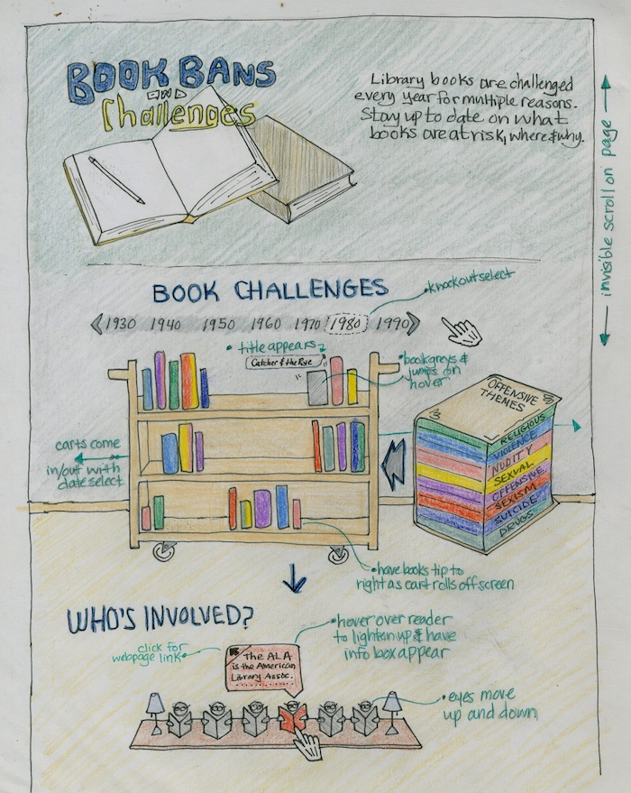

More than 11,000 books have been challenged since 1982. Book banning is found in the public school system, as well as in public libraries. The main reason that books are being banned is that people are concerned for the influence they have on their children. The problem here is that most of these books shine a light on issues we are and should be talking about as a society. Youth ficiton, a main target, are books that inspire reading in younger generations in unprecedented numbers.
For my interactive site, I imagine an infographic that depicts what books have been challenged each year, why, and where. While this topic is important and relavent to the masses, many people aren't aware that book bans are alive and well, even in their own state. The goal of the site will be to present the data in a less serious, yet engaging fashion. I'd like the user to be able to roll down the page with an invisible scroll. In the "Book Challenges" section, they'll use the arrows to browse the dates and select a year. Then a book cart will roll in from the left of the page and stop in the center. The color of the books while align with the type of theme it was challenged for. When the user hovers over a book, I'd like it to slightly lift off the cart, turn grey, and a label to appear beside it giving the book's title and ban location. When you select another year, the current cart will roll off the page to the right and the books will rock a little bit.
Another potential interaction is for the "Who's Involved" section. It's important to know who's involved in the protection of books; they provide helpful information and resources. Beneath the book cart is a long table of people reading. I'd like their eyes to move a little. Each person will be silhouetted, but when you hover over them they light up and their title will appear. In the title box will be an icon to click that will take the user to the official site of that group or organization.
